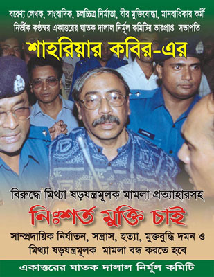

|
"Introducing Shahriar Kabir - A humanist ! |
|||||||
|
Introducing Shahriar Kabir : A Humanist By Ajoy Roy Shahriar Kabir, a reputed freelance journalist in Bangladesh, a documentary filmmaker, a writer, a humanist, and above all- an uncompromising human rights activist, was born in a typical middle class Bangladesh family on 20th November 1950. Mr. Kabir after completing his schooling in 1968 with Higher Secondary Certificate in 1968 and formal education in 1971 Mr. Kabir began his journalist career. As a freedom fighter he participated in our liberation-war against the Pakistani occupation force in 1971. After liberation of Bangladesh from Pakistani occupation force Shahriar joined ‘Vichitra’ group- a left leaning Marxism based liberal group formed centering a popular Weekly Magazine called ‘Vichitra’ in 1972. There he served as a member of the editorial board ending with Executive Editor in 1992. He was a regular contributor not only of his own Magazine of all important dailies and earned reputation as an analytical and critical columnist. His critical articles created a host friends amongst the humanist liberal and secular circles but equal number of enemies in the establishment as well as among the fundamentalists and communalists.
1. Shahriar Championing the cause of Trial of War criminals As Shahriar was exposing himself as an humanist and activist against human rights violation through his writings exposing the ugly desire and design of seizing power by fundamentalist forces to turn secular-liberal democratic Bangladesh into a theocratic state based on fundamental Islamic principles he became one of the principal target of the Islamite force in Bangladesh. Shahriar equally invited animosity of the fundamentalists and political elites who believes in autocratic form of governing system based on Islamic principles and pseudo-democracy. His writings and activities exposing the role of fundamentalists led by Jamat e Islami invited added displeasure of the Islamic force who declared him ‘Murtad’, a term meaning a Muslim who has severed his relation from Islam, a term very much despised by an ordinary Muslim. Since the liberation of our country we have been demanding a trial of the Bangladeshi war criminals like Golum Azam, Amir of Jamat e Islami, who collaborated with the Pakistani occupation force against our war of liberation. Shahriar’s voice was loud and clear- he took an active part with many of the distinguished members of the civil society under the leadership Mrs. Jahanara Imam, mother of a guerilla fighter- a Martyr in our war of liberation in the formulation of Public Tribunal which held open trial against these collaborators. The tribunal found many of the accused collaborators including Mr. Golum Azam, Amir of Jamat e Islami in Bangladesh was found guilty. The tribunal asked the then sitting government of Bangladesh National Party (BNP) (1992-96) led by Mrs. Khaleda Rahman, preferred to be known as Khaleda Zia, wife of late president General Zia ur Rahman, This action of trying the accused collaborators in a public tribunal by passing the government system of judiciary antagonized the government of Khaleda Begum. This is because the party in power BNP since its formation in early eighties by late Zia ur Rahman, an army general of Bangladesh army, and sector commander in our liberation war in 1972 was harbouring good relations with the Islamic parties including the Jamaat e Islami. In fact General Zia after assuming power rehabilitated the fundamentalists in the body politic of Bangladesh. Golum Azam was brought back by his initiative, and later on the government of Khaleda Begum did everything to return citizenship to Mr. Azam. It was therefore no wonder that public trial of Mr. Azam was taken seriously by the Khaleda government, which was at that time trying to protect the interest of the Jamat chief. All elite of the society involved in the proceedings of the trial including Mr. Shahriar Kabir were arrested by Khaleda government in nineties with sedition charge- all of them were termed as anti-state elements. Al though these elite citizens were harassed in public but were not put behind the bar as the learned high court granted bails to them. The case was finally dropped after a couple of years when a new caretaker government came to power under a retired chief justice replacing the BNP government which was forced to resign because of mass uprising against it.
2. Shahriar Kabir - a humanist, championing the cause of minorities in Bangladesh The minorities, ethnic, religious or cultural, wherever they are in a country are deprived of equal privileges, rights and opportunities. They are usually denied of sharing power and privileges in the state functions. They cannot play their due role in the development process of a country. They develop a sense of non-belongingness to his own country, ultimately they tend to form an isolated group cutting off from the main stream of the nation. They ultimately become foreigners in their motherland. The general feeling of the majority community is of antipathy or they develop a sense of inertness towards their minority neighbours. In the extreme case the majority community do have a sense of over satisfaction that in their country ‘minorities are much better off’ compared to the plights of minorities in other countries. They cannot appreciate the problems of the members of the minority communities. This picture is more or less true even in a country having secular and liberal democratic set up. The condition and plight of minorities are all the more worse in those countries where no-democracy or pseudo democracy operates- as in Bangladesh or Pakistan. In present day Pakistan the democracy is a far cry; since its inception Pakistan is officially an Islamic Republic, meaning it is a country to be governed by Islamic laws and principles. Pakistan has been all along under military dictatorship. Bangladesh is no exception. Although Bangladesh was born fighting against military junta and autocracy, the irony of the fate is that in her existence of 32 years at least 16 years we were under direct military rule and barring 7 years we were ruled either by military controlled or pseudo democracy. The present government, which came to power with full blessings of the military elite, is in fact a shadow military government. In this set up of governance of Bangladesh where judiciary is under the direct influence or control of the executive, the plight of minorities- religious or ethnic bound to be far from satisfactory. The situation gets worse when some communal trouble flare up in neighboring India. Citation of one or two examples as given below, are suffice to make the point clear.
3. Shahrirar faced sedition charge for championing the cause of Minorities Shahriar became more active and courageous in defending and upholding the cause of minorities when the victorious armed cadres of the 4-party alliance were persecuting the minorities following October General election of 2001. He with his vigilance eye extensively toured various parts of the affected areas, collected data of minority repression for future documentation. Lakhs of Bangladeshi minorities crossed over to West Bengal to save their lives from the atrocious activities of the terrorists Shahriar went to West Bengal as a journalist to see for himself the plight of those unfortunate minorities taking shelter in the border areas of West Bengal. He collected information, took picture and made video films for future films on minority plight following general election in Bangladesh in 2001. Shahriar’s activities infuriated the government of Bangladesh. On his return from Calcutta he was arrested at the Dhaka airport on 22nd, November, 2001.He was whistled away to a secret place by the special branch police (SBP) in a Gestapo style without allowing him to see his family members including his youngest son waiting at the airport to receive him. He was finally charged with sedition against his own country by supplying false documentation to outside world projecting it as a country of terrorism, intolerance and persecution against its own minority communities. In the meanwhile the enlightened citizens, the civil society, Mufassal (local) journalists, and many other human rights organizations and individuals by their extensive work and visit to the minority affected gradually brought to the surface the intensity and dimension of terrorism, atrocities, and perpetrations directed against the religious and ethnic minorities. The government replied with stern measures against these humanist groups in various methods and forms. These unpatriotic actions in the eye of the government, of humanists were tarnishing the image of the country in the outside world- the government alleged. But government’s abortive preventive measures failed to cover the real plight and status of the minorities from the international human rights organizations like Amnesty International, European Community, International Humanist and Ethical Union (IHEU), Rationalist International, etc.  We the humanists in Bangladesh build up a movement inside Bangladesh and an international pressure for the release of Mr. Shahriar Kabir. The Amnesty International termed him ‘Prisoner of Conscience’ (AI Report on Bangladesh: Attacks on members of the Hindu minority December 2001, AI Index ASA 13/006/2001). On the other front legal battle was pursued for his release. We finally succeeded releasing him by a High Court order on January 20, 2002.
4. Shahriar Kabir Taken to Custody second time But the human rights violation, atrocities against political opponents, secular elements and critics of government’s failure to maintain law and order continued unabated. The government has not taken any lesson from the past. The repression against free flow of information continued, local and foreign journalist’ activities were being monitored, and restrictions imposed. Centering entrance of journalists of channel-4 of BBC, a great fuss was created by Bangladeshi government in December 2002. They were finally deported by the government. But legacy of so called ‘information terrorism’, a termed coined by Khaleda-Nizami government to indicate free flow of information. This time many other journalists on sedition and other charges of anti state activities, political opponents and intellectuals known to be critics of the government were harassed in various ways. In fact, the government unleashed a reign of terror through its state machinery as well armed cadres of the coalition parties sharing state power.Once again Shahriar Kabir was arrested on 8 th December, 2002,from his residence in a predawn raid by the special branch police. During police remand and detention during remand/detention Shahriar was-
Shahriar is a typical case where government behaviour to its critics has been totally exposed. Its attitude is vindictive, revengeful and aimed to- ‘We would teach you a very good lesson for opposing us’. The government is found to carry on harassment in the following manner:
All these actions of government are clearly indicative of harassment, vindictive and revengeful against Shahriar Kabir. But again our movement inside the country and international pressure and legal battle won Shahriar’s release on 7th January,2003. Shahriar’s well articulated thoughts has been reflected in one of his articles presented at the ‘Conference on Human Rights in Bangladesh, held on 17 th August, 2002, at Concordia University in Montreal, Canada, just a few months before he was arrested by Bangladesh government second time. The title of his talk was "Human Rights in Bangladesh : Focus on Communal Persecution." In this article he highlighted the happening of minority repression on unprecedented scale from October-December, 2001. Let me quote from him "The religious minorities had been facing torture by Muslim religious fundamentalists and communal rightwing groups since the inception of Pakistan. Even during the parliamentary election of 1996, one that brought the Awami League to power, various communal groups subjected them to intimidation but they kept silent possibly because the Awami League came to power. However, the torture and repression the Hindus faced surrounding the 2001 elections were unprecedented in the country’s history. The Hindus were intimidated, their homes and businesses looted or burned, they were victims of extortion or rape -- just to ensure they stayed away from voting, and they left the area." In spite of the facts that many human rights organizations and the civil society carried out some survey and reports appearing in national dailies, the real magnitude, extension and intensity of communal violence would probably never be revealed because of the following reasons, says Shahriar Kabir : 1) Victims stayed away from registering complaints/cases with police fearing more repression as the attackers belonged to the ruling BNP-Jamaat coalition; 2) It is impossible to get information on the incidents that took place in remote areas; 3) Victims of rape rarely report it to the police not only fearing further torture, but also because of social conservativeness. In many countries of Asia including Bangladesh the rape victim is more ostracized by the society than the rapist; 4) Police consciously refused to record incidents of communal violence as the government denied that such incidents took place from the very start; 5) It is impossible to get the facts from those thousands of Hindus who fled to India from Bangladesh to save their lives, leaving behind all their belongings. Shahriar’s further observations are worth quoting "Except during the nine months of the 1971 Independence War, such gruesome communal incidents never took place in the history of Bangladesh. In 1971 the attackers were outsiders, the Pakistani army, but this time it was more tragic and fearsome than that of 1971 - this time the attackers were Bengalis and neighbours of the victims. Those religious minority people who fled the country during the 1971 war came back after independence, but those who fled in 2001 told me that they would never return."Shahriar continued, "Social scientists have described the incidents of recent communal persecution in Bangladesh as nothing less than "ethnic cleansing." Nearly three months ahead of the elections BNP-Jamaat gangsters publicly proclaimed that no Hindus could stay in Bangladesh, as these political parties believe that only non-Muslims support the Awami League and the easiest way to take revenge on their opponents was to resort to communal repression. The BNP-Jamat coalition government also believes, if the non-Muslims leave the country because of communal violence then¾ a) Awami League’s vote will shrink and b) it will be easier to turn Bangladesh into a monolithic Islamic country like Pakistan. Our findings show that religious minorities irrespective of their party affiliations became victims of communal violence. Veteran educationist Gopal Krishna Muhuri, who supported the Workers Party, was killed in Chittagong by criminals affiliated with the Jamaat, while Buddhist Monks Gnanjyoty Mahathero, Dulal Barua and Hindu priest Madanmohan Goswami had no links with any political party. Despite promising to vote for the BNP, Bashana Rani, the mother of gang-raped minor girl Purnima of Sirajganj district, was not spared. Thus it will be wrong to assume that only those who supported the Awami League were victims of communal repression, although there is definitely a political reason for which Awami League workers are facing repression for the last nine months. However, attacks on the religious minorities were basically communal in nature as they were attempts by fundamentalists to turn Bangladesh from a pluralist state to a monolithic one." Mr. Shahriar Kabir is a brave fighter for upholding the cause of rights of deprived people those who suffer for being a member of weaker section of the population i.e. women, children, and minorities- ethnic, religious, cultural. This relentless fighter for secular and liberal democracy based on pluralism in our society and against any form of communalism and fundamentalism. He is an able organizers and actively engaged in the in the activities of many humanist organizations. This is amply demonstrated in the list of organizations he is currently associated with. Kabir, a popular juvenile writer, earned fame from his countrymen for which he was duly honoured. A serious writer in variegated topics Kabir tends to touch the hearts of the common men. Being a politically activist, though not connected with any political parties, he has genuine sympathy and support to those parties believing in equality of human being, secularism and social justices. A socially conscious humanist all his works, whether it is for the cause of deprived minority, for peace of the world, or unity for commoners on the platform for peace and justice, are oriented for the benefit of the common men and women and aimed to arouse social consciousness among the downtrodden people to fight against all form of injustice social or political discrimination. Shahriar Kabir: a Film Maker Shahriar Kabir, a noted documentary film maker earned fame for his short film entitled "Cry for Justice"- a film made on Bangladesh liberation war and demand for trying the war criminals in 2001. His second documentary "Cry for Peace" projecting the plight of Kashmiri people on both sides of the international ceasefire line is almost completed. But as a result of putting restriction on travel to India for whatever reason, he could not finish his documentary. His passport has been taken by the police and not yet returned. Shahriar depicted the so-called Kashmir problem more as a human tragedy rather than as political one. His third proposed documentary is entitled " Cry for Amity" based on his personal experience as a humanist and human right activist- the theme of the film: democracy, peace, social justice and human rights. In his projected film he addressed the problem of fundamentalism and communalism - basis of recurrence of violent communal riots and communal violence against minorities of all classes in Bangladesh as well other countries in South Asia.Kabir is believed to be completing two white papers - one dealing with ‘500 days of Communal Persecution in Bangladesh’; second white paper would deal with ‘Activities of different fundamentalist militant groups in Bangladesh’. ==================== [About the author: Prof. Ajoy K. Roy, a reputed scientist of high esteem, studied in Bangladesh and in UK and took his Ph.D. in Physical Chemistry from Leeds University. With his initiative an advanced center of Solid State Physics and crystallography was established in 1969 under the sponsorship of UNESCO. His work led to the discovery of some fundamental process in radiation chemistry of aliphatic and amino acids and their salts. The process of dissociative electron capture and the subsequent fate of electron is considered to be his major contribution as a scientist. He has been invited twice by the Nobel committee to nominate candidates for Nobel prize in 1998 and in 2001.
Response:
==================================================== More on Shahriar Kabir in MM:
|
|||||||